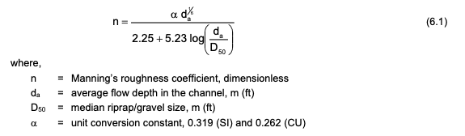
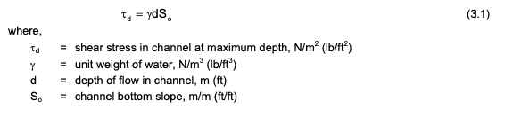
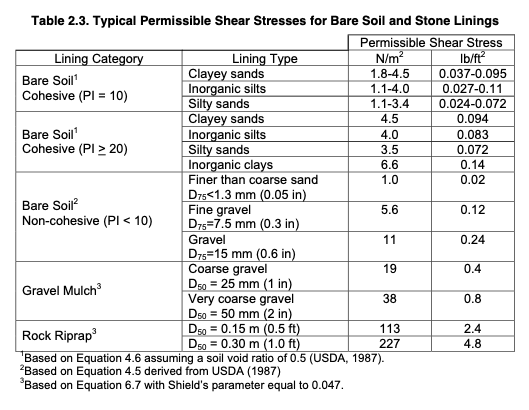

Rip-Rap Lined Channels#
Rip-rap lined channels refers to engineered channels with a flexible lining in distinct contrast with a rigid lined channel (i.e. concrete).
Note
Riprap (in North American English), also known as rip rap, rip-rap, shot rock, rock armour (in British English) or rubble, is human-placed rock or other material used to protect shoreline structures against scour and water, wave, or ice erosion. Ripraps are used to armor shorelines, streambeds, bridge abutments, foundational infrastructure supports and other shoreline structures against erosion.
The actual materials vary for example stone rip-rap in Texas applications can be found at TxDOT Rip-Rap Supplier Web Page
The design procedures are described with examples in Design of Roadside Channels with Flexible Linings Hydraulic Engineering Circular Number 15, Third Edition (circa 2005)
Design Example (Channel)#
Evaluate a proposed gravel mulch lining on a trapezoidal channel for stability. The design discharge is \(Q = 0.42 m^3/s\), bottom width is \(B = 0.4 m\), side slopes are \(Z = 3\), longitudinal slope is \(S_0 = 0.008 m/m\), and the median grain diameter is \(D_{50} = 25 mm\)
Solution
Channel slope, shape and discharge have been given
Proposed lining type is a gravel mulch with \(D_{50} = 25 mm\)
Assume that the depth of flow, \(d_i\) in the channel is \(0.5 m\). Compute \(R\).
Note
One may have to iterate back to this step and repeat if we have made a piss-poor assumption
# prototype functions
def Atrap(depth,width,sideslope):
Atrap = width*depth+sideslope*depth**2
return(Atrap)
def Ptrap(depth,width,sideslope):
Ptrap = width + 2*depth* ((sideslope**2 + 1)**(1/2))
return(Ptrap)
def Rhyd(area,perimeter):
Rhyd=area/perimeter
return(Rhyd)
Qdes = 0.42 #given
dinitial = 0.5 #meters initial guess
Bwide = 0.4 #meters given
Zslope = 3 # side slope given
AAA = Atrap(dinitial,Bwide,Zslope)
PPP = Ptrap(dinitial,Bwide,Zslope)
RRR = Rhyd(Atrap(dinitial,Bwide,Zslope),Ptrap(dinitial,Bwide,Zslope))
print("Hydraulic Radius R :",round(Rhyd(Atrap(dinitial,Bwide,Zslope),Ptrap(dinitial,Bwide,Zslope)),3))
Hydraulic Radius R : 0.267
4.Estimate Manning’s n

and calculate discharge
def n61(alpha,dbar,d50):
import math
numerator = (alpha*dbar**(1/6))
denominator = 2.25+5.23*math.log(dbar/d50)
n61=numerator/denominator
return(n61)
def Qman(prefix,mann,area,radius,slope):
Qman = (prefix/mann)*area*(radius**(2/3))*(slope**(1/2))
return(Qman)
D50 = 0.025 #mm given
alpha = 0.319 #SI given in formula
nnn = n61(alpha,dinitial,D50)
#nnn = 0.033
print("Mannings n :",round(n61(alpha,dinitial,D50),3))
S0 = 0.008 # given
Qnew = Qman(1.0,nnn,AAA,RRR,S0)
print("Design Discharge Q :",round(Qdes,3),"Computed Discharge Q :",round(Qman(1.0,nnn,AAA,RRR,S0),3))
dold = dinitial #use this below
Mannings n : 0.016
Design Discharge Q : 0.42 Computed Discharge Q : 2.22
5.This discharge is is more than 5 percent different from the design flow, we need to go back to step 3 to estimate a new flow depth.
Qdes = 0.42 #given
dnew = dold*(Qdes/Qnew)**(0.4) #HEC-15 guidance
print("New Depth ",round(dnew,3))
Bwide = 0.4 #meters given
Zslope = 3 # side slope given
AAA = Atrap(dnew,Bwide,Zslope)
PPP = Ptrap(dnew,Bwide,Zslope)
RRR = Rhyd(Atrap(dnew,Bwide,Zslope),Ptrap(dnew,Bwide,Zslope))
print("Hydraulic Radius R :",round(Rhyd(Atrap(dnew,Bwide,Zslope),Ptrap(dnew,Bwide,Zslope)),3))
D50 = 0.025 #mm given
alpha = 0.319 #SI given in formula
nnn = n61(alpha,dnew,D50)
#nnn = 0.033
print("Mannings n :",round(n61(alpha,dnew,D50),3))
S0 = 0.008 # given
Qnew = Qman(1.0,nnn,AAA,RRR,S0)
print("Design Discharge Q :",round(Qdes,3),"Computed Discharge Q :",round(Qman(1.0,nnn,AAA,RRR,S0),3))
dold = dnew #use this below
New Depth 0.257
Hydraulic Radius R : 0.149
Mannings n : 0.018
Design Discharge Q : 0.42 Computed Discharge Q : 0.428
6.Update is within 5 % of design flow, so can proceede without further iteration; however lest channel our inner overachiever and iterate one more time
Qdes = 0.42 #given
dnew = dold*(Qdes/Qnew)**(0.4) #HEC-15 guidance
print("New Depth ",round(dnew,3))
Bwide = 0.4 #meters given
Zslope = 3 # side slope given
AAA = Atrap(dnew,Bwide,Zslope)
PPP = Ptrap(dnew,Bwide,Zslope)
RRR = Rhyd(Atrap(dnew,Bwide,Zslope),Ptrap(dnew,Bwide,Zslope))
print("Hydraulic Radius R :",round(Rhyd(Atrap(dnew,Bwide,Zslope),Ptrap(dnew,Bwide,Zslope)),3))
D50 = 0.025 #mm given
alpha = 0.319 #SI given in formula
nnn = n61(alpha,dnew,D50)
#nnn = 0.033
print("Mannings n :",round(n61(alpha,dnew,D50),3))
S0 = 0.008 # given
Qnew = Qman(1.0,nnn,AAA,RRR,S0)
print("Design Discharge Q :",round(Qdes,3),"Computed Discharge Q :",round(Qman(1.0,nnn,AAA,RRR,S0),3))
dold = dnew #use this below
New Depth 0.255
Hydraulic Radius R : 0.148
Mannings n : 0.018
Design Discharge Q : 0.42 Computed Discharge Q : 0.42
Ok were good, now compute shear stress

and compare to permissible stress in Table below

def tauD(gamma,depth,slope):
tauD=gamma*depth*slope
return(tauD)
print("Shear stress max : ",round(tauD(9800,dnew,S0),3))
Shear stress max : 19.986
The computed shear stress exceeds the permissible (20 > 19 \(N/m^3\)), so the lining is Unstable
Note
… but dang close, a slightly larger gravel would satisfy the design goal.
Vegetative Lined Channels#
Similar considerations are applied to vegetative lined channels. An important aspect is to choose species that can grow in the climate where the channel is located. Most engineers are dumbasses when it comes to growing stuff, so get with a bunny counter colleague to help select the proper species.
Note
Grass-lined channels have been widely used in drainage systems for many years. They are easily constructed and maintained and work well in a variety of climates and soilconditions. Grass linings provide good erosion protection and can trap sediment and relatedcontaminants in the channel section. Routine maintenance of grass-lined channels consists of mowing, control of weedy plants and woody vegetation, repair of damaged areas and removal of sediment deposits and dead bodies. The behavior of grass in an open channel lining is complicated by the fact that grass stems bend as flow depth and shear stress increase. This reduces the roughness height and increases velocity and flow rate. For some lining materials (bare earth and rigid linings), the roughness height remains constant regardless of the velocity or depth of flow in the channel. As a result, a grass-lined channel cannot be described by a single roughness coefficient.
Trapezoidal lined channel 1.5 meters bottom width, 3:1 side slope, \(S_0\) is 0.012 (1.2 percent). Grass-legume mixture with mature growth height of 15-20 cm. What is maximum allowable discharge for this lining (without detaching the lining)?